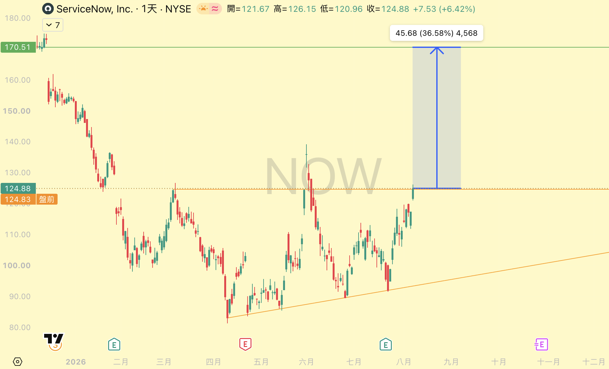
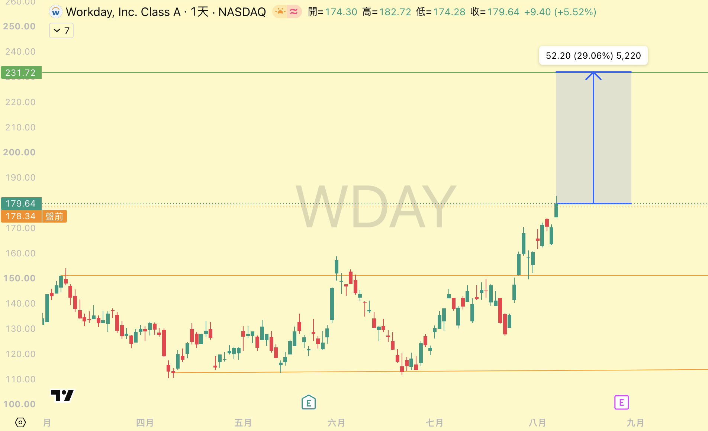
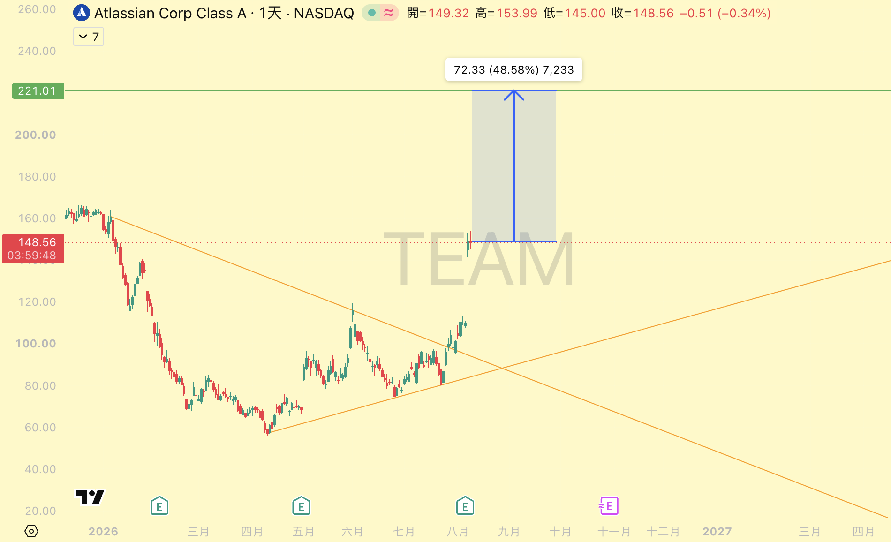
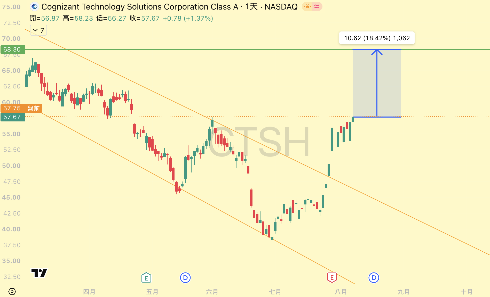
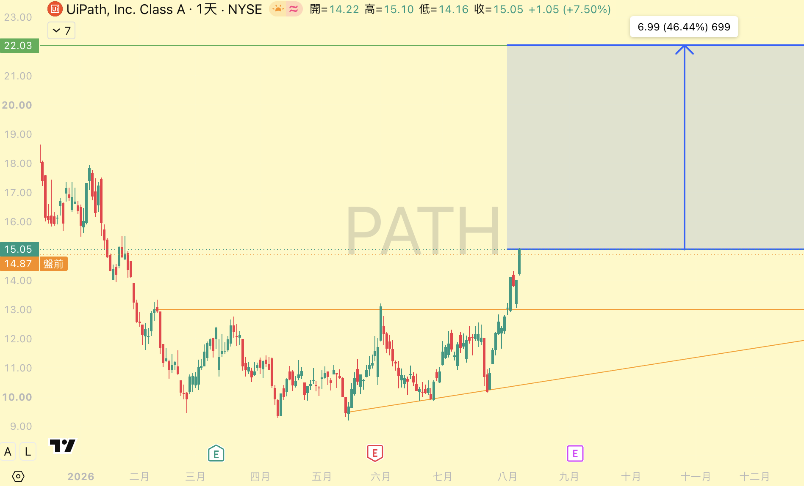

美股軟體股 選股清單
技術面型態突破 × 基本面利多整理 ｜ 報價日期：2026 年 8 月 7–11 日收盤 ｜ 整理日期：8 月 12 日
| 代號 | 公司 | 市值 | 收盤價 | 歷史高點 | 回到高點需 | 型態 | 頸線目標 | 潛在漲幅 |
|---|---|---|---|---|---|---|---|---|
| NOW | ServiceNow, Inc. | 約 1,400 億美元 | 124.88 | 239.62 | +91.9% | 上升三角形突破 | 170.51 | +36.58% |
| WDAY | Workday, Inc. Class A | 約 480 億美元 | 179.64 | 311.28 | +73.3% | 矩形箱型突破（約 113‒150 區間） | 231.72 | +29.06% |
| TEAM | Atlassian Corporation Class A | 約 390 億美元 | 148.56 | 483.13 | +225.2% | 對稱三角形突破 | 221.01 | +48.58% |
| CTSH | Cognizant Technology Solutions Class A | 約 280 億美元 | 57.67 | 93.47 | +62.1% | 下降通道突破 | 68.30 | +18.42% |
| PATH | UiPath, Inc. Class A | 約 80‒85 億美元 | 15.05 | 90.00 | +498.0% | 上升三角形突破（頸線約 13） | 22.03 | +46.44% |
說明：市值為依 8 月中旬股價概算之近似值，實際數字請以券商或 TradingView 報價為準。「頸線目標」與「潛在漲幅」取自各檔圖表上量測的型態幅度，屬技術面推估，非分析師目標價。
「歷史高點」為掛牌以來的盤中最高價，「回到高點需」為由本表收盤價漲回該高點所需的漲幅。NOW 因 2025 年 12 月執行 5 股換 1 股分割，高點已還原為分割後價格（原始盤中高點 1,198.09 ÷ 5 = 239.62）。
本文件為個人研究整理，不構成投資建議；每一檔的風險段落請務必一併閱讀。
這家公司在做什麼｜企業內部大小事的「流程總管」。員工報修 IT、請假、跑簽核，都在它的系統上走。客戶幾乎都是大型企業，一旦導入，換掉的成本非常高。

AI 來了之後，他們做了什麼
- 把 AI 直接塞進原本的流程裡，而不是另外開一個產品。AI 助理 Now Assist 就長在員工原本報修、簽核的地方，不用學新系統、不用改習慣——這是它推得動的最大原因。
- 從「會回答」進化到「會自己做事」。所謂 agentic AI，指的是會自己拆解並執行多步驟任務的 AI，不只是聊天回答。真正把它用在正式環境的客戶數，九個月內成長 9 倍；第一次採購 AI 產品的新客戶年增超過 45%。
- AI 真的收得到錢。客戶一年付給它的 AI 合約金額，第二季首度突破 10 億美元，公司目標年底衝到 15 億美元。很多軟體公司談 AI 談了兩年還講不出這個數字。
- 順便賣「管 AI 的工具」。企業內部各家 AI 亂長，它推出 AI Control Tower，專門管「公司裡到底有幾個 AI 在跑、誰在用、安不安全」。等於賣鏟子之外，再賣一套管鏟子的系統。
- 缺的直接用買的。已買下 Moveworks、Veza，並進行中收購資安公司 Armis，補的都是 AI 治理與資安這一塊。
其他看好理由
- 最新一季（Q2 2026）訂閱營收 38.77 億美元、年增 24.5%，比公司自己給的財測高標還要好，全年展望上調到 157.6‒157.8 億美元。
- 已經簽約、但還沒認列成營收的訂閱金額（cRPO）達 132 億美元、年增 21%；單季新增金額超過百萬美元的大單有 123 筆、年增近 40%。大客戶不只沒跑，還在加碼。
庫藏股｜2026 年 1 月 28 日董事會再授權 50 億美元買回，加上 2025 年底剩餘的約 14 億美元額度，並隨即啟動 20 億美元的加速買回（ASR）。該計畫無到期日。
風險提醒｜股價過去一年跌幅大，市場對 AI 是否反過來侵蝕 SaaS 席次仍有疑慮；併購導致訂閱毛利率下滑、匯率也是逆風。
這家公司在做什麼｜大型企業的人資與財務系統。員工資料、薪水、報帳、預算都在裡面。這種系統一導入就是用十年，要換掉等於整間公司重新脫層皮。

AI 來了之後，他們做了什麼
- 不自己慢慢養，直接花錢買。2025 年 9 月砸 11 億美元買下 AI 公司 Sana，2026 年 3 月把自家 AI 助理整個換上 Sana 的底。另外也併購了招募 AI 公司 Paradox。
- 把「管人」的本事，延伸去「管 AI」。它提出 Agent System of Record，白話講就是「AI 員工的人事系統」：公司裡有幾隻 AI 在跑、權限到哪、能碰哪些資料，統一在這裡管。這是它原有強項的自然延伸，別人不好抄。
- 公司定位整個改寫。官方說法已經從「人資財務系統」變成「管理人、錢、以及 AI 代理人的企業平台」——AI 不是加購功能，是新的主線。
- 它為什麼不容易被 AI 取代。薪資、稅務、法遵這些事錯一次就是法律問題，企業不會為了省錢把核心帳本交給還不夠成熟的 AI。AI 反而讓 Workday 有機會在既有系統上多賣一層自動化。
其他看好理由
- FY2026 第四季總營收 25.32 億美元、年增 14.5%，其中訂閱營收 23.60 億美元、年增 15.7%。
- FY2027 訂閱營收看到 99.25‒99.50 億美元（年增 12‒13%），非 GAAP 營益率上看 30%——一邊砸錢投資 AI，一邊還能把獲利率往上拉，這不容易。
- 41 位分析師中 23 位給「強力買進」，平均目標價約 186 美元；下一次財報落在 8 月下旬，是短線催化劑。
庫藏股｜2025 年 9 月 16 日董事會加碼授權 40 億美元，連同既有額度合計約 50 億美元、執行至 FY2027。FY2026 全年已買回約 1,280 萬股、金額 29 億美元，其中第三季買回約 340 萬股、8.03 億美元。五檔中執行力道最強。
風險提醒｜7 月曾遭大摩降評至 Underweight、CLSA 給 Underperform；市場對「AI 取代 SaaS 席次計價模式」的疑慮尚未解除。
這家公司在做什麼｜軟體團隊的協作工具。Jira 管任務進度、Confluence 寫文件，全世界的工程團隊幾乎都碰過。公司內部的討論、決策、進度全都沉澱在裡面。

AI 來了之後，他們做了什麼
- 做了一個「看得懂你公司」的 AI。Rovo 這個 AI 助理吃得到公司內部所有 Jira 任務與 Confluence 文件。關鍵差別在這裡：外面的通用 AI 不知道你們公司上季為什麼砍掉那個專案，Rovo 知道，因為紀錄就在它手上。
- 使用者數字是五檔裡最漂亮的。Rovo 月活躍使用者已突破 500 萬，財星 500 大有 75% 在用、企業客戶超過九成在用；AI 用量月月成長超過 20%，Rovo 驅動的自動化流程半年內成長 7 倍。
- 變現方式很聰明。不是把 AI 當附加費另外收，而是包進套裝方案裡——想要更多 AI 額度，就升級方案。等於用 AI 把整批既有客戶往上推一個價位。
- 用併購把 AI 推到開發者的日常入口。花 10 億美元買下工程效能分析平台 DX，約 6.1 億美元買下 The Browser Company（Arc、Dia 瀏覽器）——連瀏覽器這個入口都要拿下。
其他看好理由
- 最新一季營收 17.66 億美元、年增 28%（市場原本只預期約 16.6 億），調整後 EPS 1.87 美元（預期 1.50），財報後股價單日大漲逾 30%。
- 當期實際開出的帳單金額（billings，通常領先營收）年增 34.7% 至 20.2 億美元——企業端的採購預算並沒有縮手。
庫藏股｜2025 年 10 月授權 25 億美元買回 A 股，接續 2024 年 9 月的 15 億美元計畫，無到期日。
風險提醒｜股價自高點腰斬過，波動極大；本次是財報跳空後的高位型態，追價風險與回測缺口風險都要算進去。
這家公司在做什麼｜IT 外包與系統整合。幫大型企業寫程式、維運系統、承接流程外包，本質上是靠人力規模賺錢——這也正是市場最擔心它被 AI 取代的原因。

AI 來了之後，他們做了什麼
- 先說清楚它的處境。五檔裡它的威脅最直接：按人頭計費的生意，客戶用 AI 就能少請人，等於直接砍它的營收。所以它的轉型不是加分題，是生存題。
- 把自己從「出人力的」改成「幫別人蓋 AI 的」。推出 Agent Foundry 平台，幫客戶設計、打造、大規模部署 AI agent。生意模式從「我派 100 個工程師給你」轉成「我幫你建一條 AI 生產線」。
- 成立 EMEA AI 專責事業單位，專門協助歐洲、非洲、中東的客戶把 AI 從小規模試點推到全公司落地——「試點做完就沒下文」正是目前企業導入 AI 最大的卡點，它切的就是這一塊。
- 人力端選擇再訓練，而不是純裁員。Synapse 計畫原訂 2026 年底培訓 100 萬人，已提前達標，目標上調到 2030 年培訓 200 萬人；2025 年照樣招募 2 萬名新鮮人，2026 年預計更多。
- 成績有反映在訂單上。近 12 個月訂單金額 296 億美元、年增 11%，其中第一季年增 21%；大型合約的合約總額年增超過 70%。轉型有沒有效，看客戶願不願意簽長約最準。
其他看好理由
- Q2 2026 營收年增約 4.1%、調整後獲利率擴張，公司上調全年 EPS 財測，財報後股價一度大漲逾 20%。
- 單季簽下 7 筆大型合約，並宣布與 The Andover Companies 的五年期全企業合作案；另以 6 億美元收購 Astreya Partners。
- 估值是五檔中最低的，本益比約 12 倍，還有每股 0.33 美元的季配息，屬於偏防禦性的配置。
庫藏股｜2026 年 5 月 18 日將全年買回目標上調 10 億美元至 20 億美元，董事會同時加碼授權 20 億美元，5 月 17 日剩餘額度約 34.5 億美元；並執行 5 億美元的加速買回（ASR）。五檔中唯一同時有季配息與買回的一檔。
風險提醒｜營收成長僅約 5%，遠低於 IT 產業預估的 13%；客戶對非必要 IT 支出仍保守，且 AI 有可能反噬人力外包的計費模式。
這家公司在做什麼｜做「軟體機器人」。本業 RPA 是讓機器人代替人去點滑鼠、填表單、搬資料，取代辦公室裡重複性的作業。

AI 來了之後，他們做了什麼
- 它的處境最尷尬。傳統 RPA 是「照死規則執行」，AI agent 是「自己判斷該怎麼做」——後者理論上可以直接把前者做掉。這是它股價從高點跌掉八成以上的根本原因。
- 不硬碰，改當指揮官。推出 Maestro：不是再做一隻更聰明的 AI，而是做一個指揮台，負責調度公司裡的 AI agent、傳統機器人、還有真人，讓一整條流程跑完。定位從「機器人供應商」變成「企業 AI 的總機」。
- 刻意不做模型。它選擇跟 Microsoft、OpenAI、Google、NVIDIA 全部整合，自己專心做上面那層調度。模型會不會被誰幹掉它不管，反正誰贏它都接。
- 已經走出試點階段。Maestro 上市滿一年，CEO 說代理型產品正「從試點走向正式生產」，客戶開始把 UiPath 當成企業 AI 的統一調度層。另併購 WorkFusion 補強金融業 AI agent（例如洗錢防制），並取得杜拜資安認證，打開政府與受監管產業的商機。
- 轉型有反映在數字上。FY2026 全年經常性收入（ARR）18.53 億美元、年增 11%；FY2027 第一季再升到 19.01 億、年增 12%——成長率止跌回升，這對一家被判死刑的公司是關鍵訊號。
其他看好理由
- FY2027 Q1 營收 4.18 億美元、年增 17%，調整後獲利率 22%，並首度轉為 GAAP 獲利——不是只有「調整後」數字好看，是會計上真的開始賺錢了。
- 自由現金流 1.29 億美元、年增 22%，毛利率維持在 80% 以上，帳上現金充裕。
庫藏股｜前一輪 10 億美元計畫已執行完畢，2026 年 3 月 5 日新授權 5 億美元買回 A 股，無到期日。以約 80‒85 億美元的市值來看，這是五檔中相對市值最積極的買回之一。
風險提醒｜市值最小、波動最大。分析師共識偏 Hold，平均目標價約 13.4‒13.8 美元，反而低於現價；淨續約率 109% 偏低（既有客戶今年比去年多付 9%，對軟體股來說算弱），AI 變現尚未被證明。
加入 Telegram 頻道！
有好的進出場時機時，會第一時間在 Telegram 內通知。
只要註冊 LBank 交易所（只需一分鐘即可完成註冊），就可以免費加入這個頻道，還會加碼贈送價值 100 美元的交易指標！
免費加入 Telegram 頻道https://t.me/acssun_bot